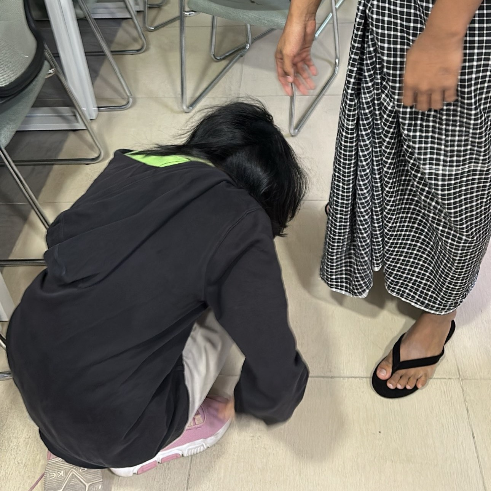

This website was made for my beloved partner whom I absolutely adore and the cute memories that we have shared together. <3
Click to see our story ^ ^< Our highschool years before we started dating. >
My first impression of you was an old senior who came to observe our class but turns out you were a new student. We were put in the same class at first before you had to change classes into sapphires, which was very disappointing. You catched my eye since then becuase of your outstanding height and pro badminton skills. At the end of school year, we exchanged socials but never contacted.
Start of 10th grade, august: I started sitting beside you during ICT class. You were fun to talk to and I wanted to be friends with you. We exchanged discords. On your birthday, I bought you a duck. We were close friends but not best friends. It was a combined birthday party. I only bought you a present becuase you felt the closest to me out of the rest of the birthday guys.
After hours of time spent on texting each other and hanging out in school, we went from "the best friend I could ever have" to best friends. Early december, I couldn't deny my feelings for you anymore and I wanted to be more than friends. None of us didn't make a move. Me personally, I didn't want to get attached to you and wanted to keep my distance from you. (Legit tough times)
< The cute dates we went >
I sneaked out of house for like 45 minutes (my grandma was going detective on me fr) and you came visit after school. We made out in the convenice store(the lady there was giving us side eyes fr). I remember boba spilling on me, and you made a goofy ahh joke abt it HAHA
We got kicked out of the arcade LMFAOOO. At least we got to take these photos before getting kicked out. Oh yeah, they even asked us to delete the photos because one of their staff was in it. I genuinely can't find where the staff is, but we didn't delete it anyways.
We would sneak out of school after mock exams (to do the yk what) and had the best time of our lives fr. Too many dates during the mocks so I'm not gonna list them down ^ ^ You almost got into trouble because you put your phone in silent and your family couldn't contact you.
Yasss I love this one so much omg it was sososos fun. The fried chicken taste so good. I be telling you to always eat at bonchon whenever we go JC. Let's try something else the next time. Played at the arcade it was super duper fun. Music box was the best tho.
< Dates I want to go on with you >
AMUSEMENT PARK
AQUARIUM
POTTERY MAKING
PICNIC
ROLLERSKATING
STAR GAZING
BEACH DATE
NETFLIX AND CHILL
MUSEUM
LATE-NIGHT WALKS
MATCHING PJS
BADMINTON
< Some movies I think we'd like watching together >
THE NOTEBOOK
Duke reads the story of Allie and Noah, two lovers who were separated by fate, to Ms Hamilton, an old woman who suffers from dementia, on a daily basis out of his notebook.
LA-LA LAND
When Sebastian, a pianist, and Mia, an actress, follow their passion and achieve success in their respective fields, they find themselves torn between their love for each other and their careers.
THE FAULT IN OUR STARS
Two cancer-afflicted teenagers Hazel and Augustus meet at a cancer support group. The two of them embark on a journey to visit a reclusive author in Amsterdam.
WALL-E
A machine responsible for cleaning a waste-covered Earth meets another robot and falls in love with her. Together, they set out on a journey that will alter the fate of mankind.
UP
Carl, an old widower, goes off on an adventure in his flying house in search of Paradise Falls, his wife's dream destination.
RATATOUILLE
Remy, a rat, aspires to become a renowned French chef. However, he fails to realise that people despise rodents and will never enjoy a meal cooked by him.
10 THINGS I HATE ABOUT YOU
A high-school boy, Cameron, cannot date Bianca until her anti-social older sister, Kat, has a boyfriend. So, Cameron pays a mysterious boy, Patrick, to charm Kat.
ROMEO + JULIET
The rivalry between Verona's two well-established families, the Capulets and the Montagues, affects the relationship of their children Romeo and Juliet.
THE VAMPIRE DIARIES
On her first day at high school, Elena meets Stefan and immediately feels a connection with him. However, what she does not know is that Stefan and his brother, Damon, are in fact vampires.